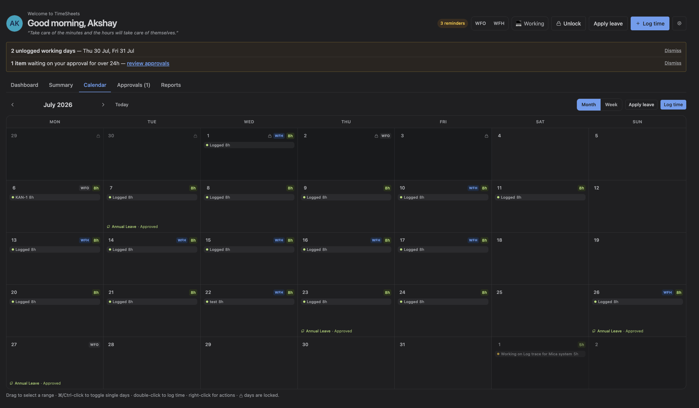
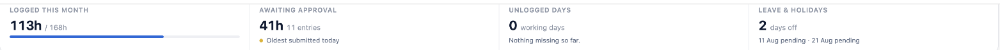
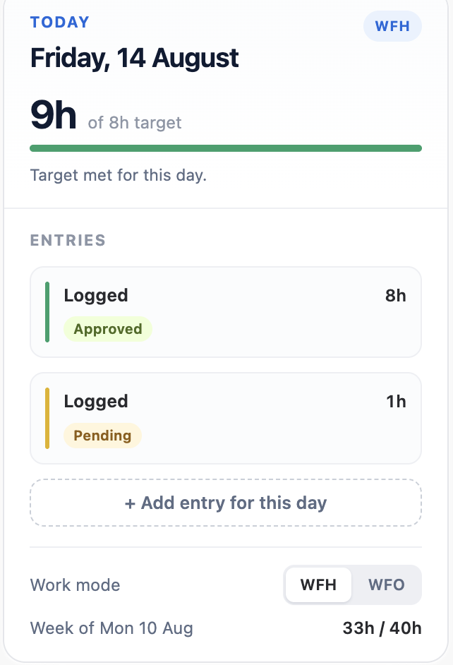
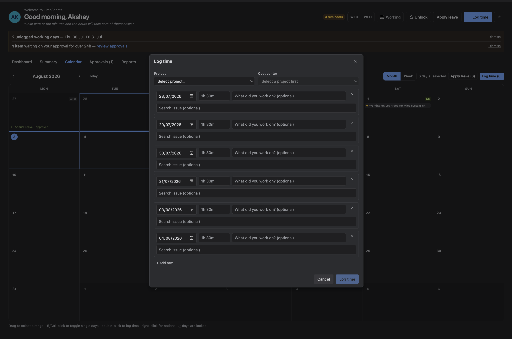
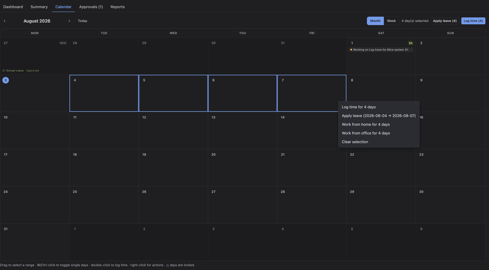

The Calendar is the fastest way to see and fix a period of time. It has three parts: a summary of the month, the grid, and a day panel describing whichever day you last clicked.
The split is deliberate. A day cell is narrow, so the grid shows the shape of your month — how much, what status, which days are empty — while the panel beside it carries the detail for one day. That is why the grid abbreviates a day's total as 6:30 and the panel spells it out as 6h 30m.

1. The month summary
Four figures across the top, all about you and all about the month you are looking at.
| Figure | What it counts |
|---|---|
| Logged this month | Everything except sent-back entries, against a target of your working days multiplied by the site's hours per day |
| Awaiting approval | Minutes and entries still pending, plus how long the oldest one has been waiting |
| Unlogged days | Working days already past with nothing logged. Holidays and days of leave are never counted, and neither is today |
| Leave & holidays | Days off this month, listed as spans rather than one date at a time |
Unlogged days looks backwards, not forwards. Today is not counted until it is over, and the rest of the month is not counted at all — otherwise every month would open by telling you that you had not yet done work that is not yet due.

2. Reading a day
Each day shows its number, the day's total, and up to four entries — ten in week view — with a coloured bar for each entry's status. Beyond that the cell says +N more rather than growing; the day panel lists them all.
Below the entries a day can carry a work-mode chip, a public holiday, leave, and a thin capacity bar showing the day's total against your daily target. The bar turns green once the target is met.
| Colour | Meaning |
|---|---|
| Green | Approved, or auto-approved |
| Amber | Pending — waiting for a decision |
| Red | Sent back |
The same three colours appear in the legend under the grid, so nothing depends on remembering them.
A sent-back entry still appears on its day, but it is not counted in the day's total or in the month summary. Sent-back work is not logged time until it has been fixed and approved.
3. The day panel
Click any day to describe it in the panel on the right: the date, your work mode, the day's total against target and how much is left, then every entry with its duration, description and status.
From the panel you can add an entry to that day, switch the day between WFH and WFO, see the week's running total against the week's target, and — on sites that approve by the week — submit or recall that week.
The panel stays put while a long month scrolls past it. On a narrow window it moves below the grid instead of beside it.

Clicking a locked day still shows it in the panel, read-only. Being unable to change a day is not a reason to be unable to look at it.
4. Navigating
The arrows step a month at a time, or a week in week view. Today returns to the current period. Today's date is always marked with a filled circle, wherever you have navigated to.
Switching between month and week returns you to the current period — the two views keep one position, not two.
5. Selecting days
Selection works like a spreadsheet:
| Action | Result |
|---|---|
| Click and drag | Selects a range |
| ⌘-click, or Ctrl-click on Windows | Adds or removes a single day, including a weekend |
| Double-click | Opens Log time for that day |
| Right-click | Opens the actions menu |
Dragging a range covers working days only. Dragging across a fortnight to log five days each week should not sweep up the weekends in between — but ⌘-click still picks an individual Saturday when you did work one.
With days selected, Log time and Apply leave in the toolbar apply to all of them, and say how many.

6. Right-click actions
Right-clicking a day offers: log time, apply for leave, work from home, work from office, and clear the selection. Each names how many days it will affect.
Right-clicking a day that is not already selected moves the selection to it first, so the menu always acts on the day you actually pointed at.
On a locked day the menu shows a single line explaining that the day is locked and needs an unlock request. It deliberately offers no actions — a menu that quietly applied to some other day would be worse than one that does nothing.

7. Leave and holidays
Public holidays and leave both appear on the day. Leave is shown whatever its state — pending, approved or refused — with the status carried by the dot's colour, and spelled out in words when the window is wide enough. The day panel always names both.
8. Work modes
A day can be marked WFH (working from home) or WFO (working from the office). Those are the only two values.
Work modes are informational: they do not affect capacity, totals or approval. What they are for is the team view — knowing who is where next Tuesday is the whole point.
Set one from the right-click menu for a whole selection, or from the day panel for the day you are looking at.